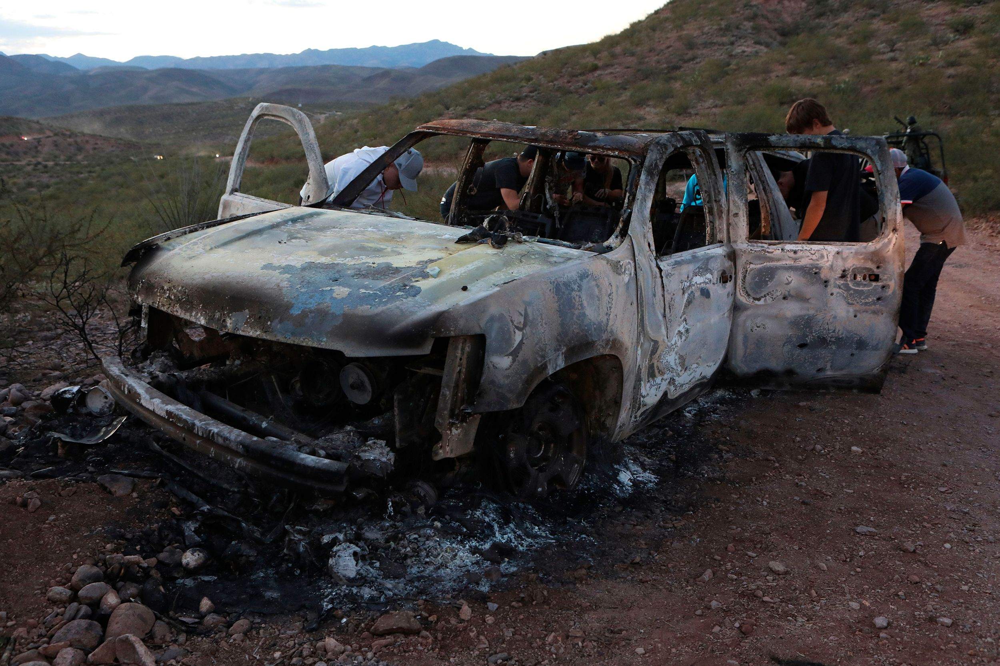

Background Info on the Massacre

The 2019 LeBarón family massacre was a brutal attack that drew international attention to the dangers of cartel violence in northern Mexico. It occurred on November 4, 2019, along a remote road between the states of Sonora and Chihuahua, near the community of Colonia LeBarón, where many members of the extended LeBaron family live.
That morning, three vehicles carrying women and children from related Mormon-descended families were traveling between communities. According to reports, heavily armed gunmen ambushed the vehicles. The attackers opened fire, killing several occupants and setting at least one vehicle on fire. In total, nine people were killed—three women and six children. Some children initially survived the attack, with a few managing to hide or escape into the surrounding desert until help arrived.
Government involvement
The victims were part of a broader network of families with dual U.S.-Mexican citizenship, many of whom had lived in the region for generations. News of the killings spread quickly, prompting outrage in both Mexico and the United States. Due to the victims’ ties to both countries, the massacre became a diplomatic concern, with calls for greater cooperation in combating organized crime.
Investigators widely believed the attack was carried out by members of organized crime groups operating in the area. At the time, the region was contested by rival factions of drug cartels, particularly groups linked to La Línea and the Sinaloa Cartel. Authorities suggested that the gunmen may have mistaken the vehicles for those of a rival group, though some family members questioned this explanation and argued that the attack could have been intentional.
The massacre highlighted the broader climate of insecurity in parts of northern Mexico, where criminal organizations often operate with significant firepower and influence. It also underscored the vulnerability of rural communities like Colonia LeBarón, despite some residents’ efforts to organize self-defense and speak out against violence.
In the aftermath, both Mexican and U.S. authorities launched investigations, and several suspects were arrested. However, questions remained about accountability and the full motives behind the attack. For the LeBaron community, the tragedy marked one of the most devastating events in its modern history, reinforcing long-standing concerns about safety and justice in the region.